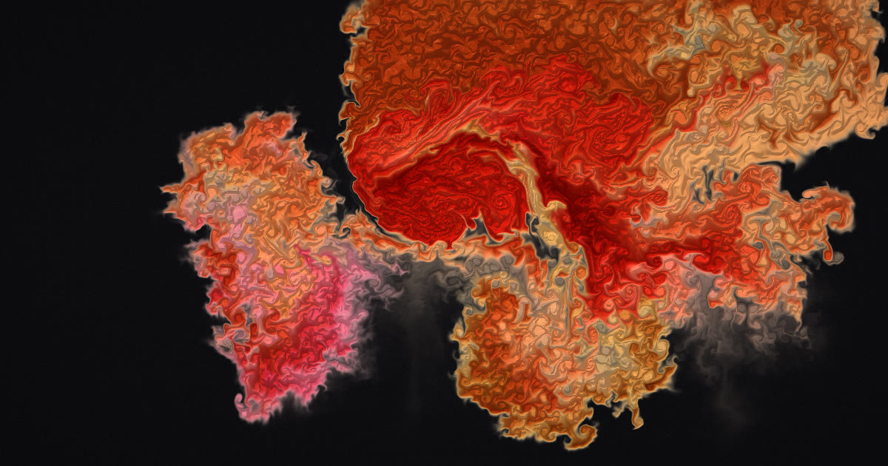

Открыть проект ↗01
Inkfall
Живая симуляция чернил в воде прямо в браузере.
Физика жидкости рассчитывается на видеокарте. Можно менять характер чернил, управлять движением звуком и микрофоном, сохранять кадры и записывать видео до 4K.
WebGL2GPU simulationБез зависимостей